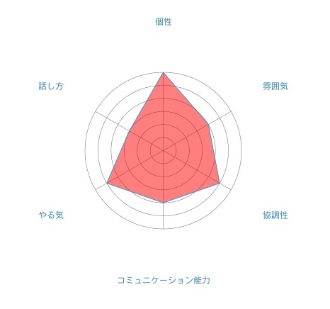

Profile
Self-analysis
Skils & Achievements
Comment
- Tap these words or Scroll down -
Profile
名前
井口 恵吾（イグチ ケイゴ）
年齢
16歳
住所
東京都
趣味
物思いに耽る、ゲーム、サッカー、絵を描く
性格
両極端
経歴
2016年 4月 慶應義塾志木高等学校 入学
2016年 8月 株式会社アイデンティティー インターンシップ開始
Self-analysis

個性
かなり癖のある個性を持っているがあまり表には出していない。
雰囲気
可もなく不可も無し。特筆することは何もない。
協調性
基本的に問題はないが、こだわりがあることに関しては譲らない。
コミュニケーション能力
時と場合によってかなり変わる。まだまだ未熟だが成長の見込みはある。
やる気
何事もやると決めたら全力でやる。
話し方
少し聞き取りづらい上に話にオチをつけるのがド下手。
Skils
HTML、CSS、JavaScript、jQuery、Ruby、Ruby on Rails
※どれも入門程度
Achivements
特に無し。
Comment
きっかけはあまり覚えていないですが、中学生の頃にプログラミングに興味を持ちプログラミングを始めてみようと思いました。しかし当時は受験勉強で忙しかったため断念し、高校生になたらプログラミングを始めようと決めました。そして無事受験に合格し高校生になったので、まずはじめにプログラミングの書籍を買ったのですが、我が家にはプログラミングのできる環境がありませんでした。そこで自宅でプログラミングをすることは諦めて、高校の電子工学研究会という一番プログラミングに関係がありそうな部活に入ったのですが、周りはプログラミング上級者ばかりでほとんど話にはついていけず、活動もほとんどが個人活動なので教えてもらうこともできず、学校のPC室も放課後すぐにしまってしまうので個人活動すらできず、という僕にとってはかなり悪い環境でした。そんな時にインターンシップという制度を知りました。それはプログラミングができて収入もあり、社会についても学べるという素晴らしい制度でした。現在はインターンシップでプログラミングについて学びつつ、その収入で家にプログラミングのできる環境を整えようと精進しています。